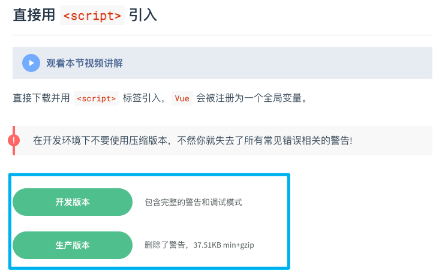
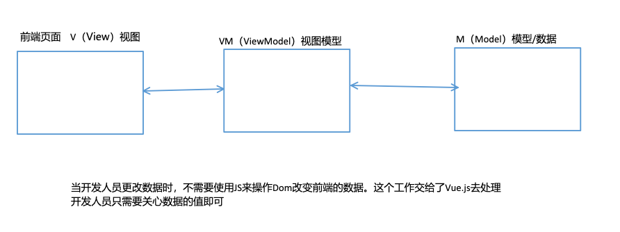
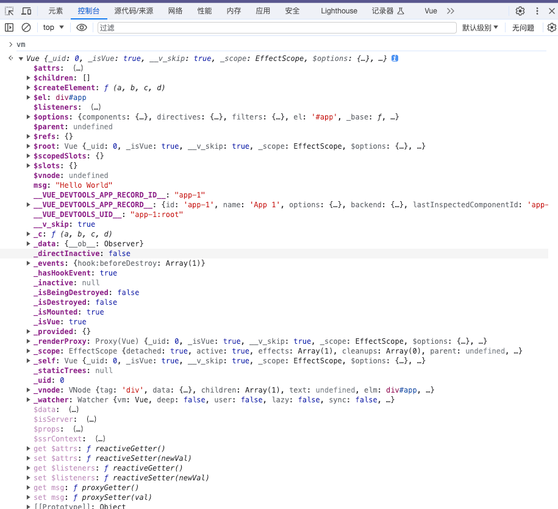
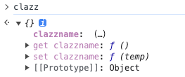
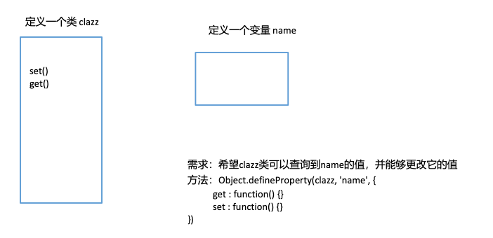

本篇前期以Vue2.X学习为主。
对于语法细节的研究可以查看Vue2.X的api官网
https://v2.cn.vuejs.org/v2/api/
通过搜索以查看详细的举例说明
Vue的引入
Vue (读音 /vjuː/，类似于 view) 是一套用于构建用户界面的渐进式框架。
Vue2的安装
在学习前期阶段，我们使用Vue2。

引入Vue2
| HTML | |
|---|---|
1 2 | |
最简单的Vue程序
| HTML | |
|---|---|
1 2 3 4 5 6 7 8 9 | |
第一步 创建Vue实例
- 为什么不直接调用Vue()函数？
- 不行，因为直接调用Vue()函数，不创建实例的话，会出现以下错误：
Vue is a constructor and should be called with the new keyword
- Vue(options)构造函数中，options参数是什么
- option翻译为选项 options翻译为多个选项
- Vue框架要求这个options参数必须是一个纯粹的JS对象：{}
- 在{}对象中可以编写大量的key:value对。
- 一个key:value对就是一个配置项。
- 主要是通过options这个参数来给Vue实例指定多个配置项。
- 关于template配置项
- template翻译为：模板。
- template配置项用来指定什么？用来指定模板语句，模板语句是一个字符串形式的。
- 什么是模板语句？
- Vue框架自己制定了一些具有特殊含义的特殊符号。
- Vue的模板语句是Vue框架自己搞的一套语法规则。
- 我们写Vue模板语句的时候，不能乱写，要遵守Vue框架的模板语法规则。
- 模板语句可以是一个纯粹的HTML代码，也可以是Vue中的特殊规则。也可以是HTML代码 + Vue的特殊规则。
- template后面的模板语句会被Vue框架的编译器进行编译，转换成浏览器能够识别的HTML代码。
第二步 将Vue实例挂载到id='app'的元素位置。
- Vue实例都有一个$mount()方法，这个方法的作用是什么？
- 将Vue实例挂载到指定位置。
-
app 显然是ID选择器。这个语法借鉴了CSS。
模板语句template的数据来源
谁可以给模板语句提供数据支持呢
data选项。
data配置项的专业叫法：Vue 实例的数据对象.（data实际上是给整个Vue实例提供数据来源的。）
项的类型是什么？
Object | Function （对象或者函数）
a是对象的话，对象必须是纯粹的对象 (含有零个或多个的 key/value 对)
data数据如何插入到模板语句当中？
{{}} 这是Vue框架自己搞的一套语法，别的框架看不懂的，浏览器也是不能够识别的。 Vue框架自己是能够看懂的。这种语法在Vue框架中被称为：模板语法中的插值语法。（有的人把他叫做胡子语法。）
| Text Only | |
|---|---|
1 | |
模板语句的配置项
-
template后面指定的是模板语句，但是模板语句中只能有一个根节点。
-
只要data中的数据发生变化，模板语句一定会重新编译。（只要data变，template就会重新编译，重新渲染）
-
如果使用template配置项的话，指定挂载位置的元素会被替换。
html 原本的<div id="app"></div>会被替代
-
好消息：目前我们可以不使用template来编写模板语句。这些模板语句可以直接写到html标签中。Vue框架能够找到并编译，然后渲染。如果直接将模板语句编写到HTML标签中，指定的挂载位置就不会被替换了。
-
关于$mount('#app')
- 也可以不使用$mount('#app')的方式进行挂载
- 在Vue中有一个配置项：el
- el配置项和$mount()可以达到同样的效果。
-
el配置项的作用？
- 告诉Vue实例去接管哪个容器。
- el : '#app'，表示让Vue实例去接管id='app'的容器。
- el其实是element的缩写。被翻译为元素。
解决浏览器控制台的错误信息
-
我们使用开发版本的vue.js时，控制台会出现白色字体的警告。可以用以下方法关掉警告
-
在每次写代码时，在script标签内写入
Vue.config.productionTip=false，但是这样有些时候会不起作用- 可能是vue的版本问题，也可能是浏览器的内核问题
- 更换生产版本的vue
-
更改开发版本vue的源码：找到
productionTip这个全局变量，将它的值设置为false -
安装vue.jsp devtools，关闭另一个白色字体的警告
- 在vscode中，使用LiveServer运行html文件时，会将html放到一个服务器上运行。有些时候服务器会找不到一些原本的资源文件。我们只需要找到对应的资源文件，将其放到相应的位置即可。（这是废话）
Vue实例与容器的关系
实例就是new出来的一个Vue对象
容器就是Vue对象接管的html标签
一个Vue实例只能接管一个容器
一个容器也只能被一个Vue实例接管
Vue核心语法
模版语法-插值
{{}}
主要研究：{{这里可以写什么}}
- 在data中声明的变量、函数等都可以。
- 常量都可以。
- 只要是合法的javascript表达式，都可以。
- 模板表达式都被放在沙盒中，只能访问全局变量的一个白名单，如 Math 和 Date 等。 'Infinity,undefined,NaN,isFinite,isNaN,' 'parseFloat,parseInt,decodeURI,decodeURIComponent,encodeURI,encodeURIComponent,' 'Math,Number,Date,Array,Object,Boolean,String,RegExp,Map,Set,JSON,Intl,' 'require'
| HTML | |
|---|---|
1 2 3 4 5 6 7 8 9 10 11 12 13 14 15 16 17 18 19 20 21 22 23 24 25 26 27 28 29 30 31 32 33 34 35 36 37 38 39 40 41 42 43 44 45 46 47 48 49 50 51 52 53 54 55 56 | |
模版语法-指令
-
什么是指令？有什么作用？
- 指令的职责是，当表达式的值改变时，将其产生的连带影响，响应式地作用于 DOM
-
Vue框架中的所有指令的名字都以“v-”开始。
-
插值是写在标签体当中的，那么指令写在哪里呢？
- Vue框架中所有的指令都是以HTML标签的属性形式存在的，例如：
HTML 1<span 指令是写在这里的>{{这里是插值语法的位置}}</span>- 注意：虽然指令是写在标签的属性位置上，但是这个指令浏览器是无法直接看懂的。是需要先让Vue框架进行编译的，编译之后的内容浏览器是可以看懂的。
-
指令的语法规则
- 指令的一个完整的语法格式：
<HTML标签 v-指令名:参数="javascript表达式"></HTML标签>-
表达式：
- 之前在插值语法中{{这里可以写什么}}，那么指令中的表达式就可以写什么。实际上是一样的。但是需要注意的是：在指令中的表达式位置不能外层再添加一个{{}}
-
不是所有的指令都有参数和表达式：
- 有的指令，不需要参数，也不需要表达式，例如：v-once
- 有的指令，不需要参数，但是需要表达式，例如：v-if="表达式"
- 有的指令，既需要参数，又需要表达式，例如：v-bind:参数="表达式"
v-once 指令
- 作用：只渲染元素一次。随后的重新渲染，元素及其所有的子节点将被视为静态内容并跳过。这可以用于优化更新性能。
| HTML | |
|---|---|
1 2 3 4 | |
v-if="表达式" 指令
- 作用：表达式的执行结果需要是一个布尔类型的数据：true或者false
- true：这个指令所在的标签，会被渲染到浏览器当中。
- false：这个指令所在的标签，不会被渲染到浏览器当中。
| HTML | |
|---|---|
1 2 3 | |
v-bind指令
-
这个指令是干啥的？ - 它可以让HTML标签的某个属性的值产生动态的效果。
-
v-bind指令的语法格式：
HTML 1<HTML标签 v-bind:参数="表达式"></HTML标签> -
v-bind指令的编译原理？
- 编译前：
HTML 1<HTML标签 v-bind:参数="表达式"></HTML标签>- 编译后
HTML 1<HTML标签 参数="表达式的值"></HTML标签>- 注意两项：
- 在编译的时候v-bind后面的“参数名”会被编译为HTML标签的“属性名”
- 表达式会关联data，当data发生改变之后，表达式的执行结果就会发生变化。
- 所以v-bind才会有动态效果
-
v-bind因为很常用，所以Vue框架对该指令提供了一种简写方式：
- 只是针对v-bind提供了以下简写方式：
<img :src="imgPath">保留:，去掉v-bind
- 只是针对v-bind提供了以下简写方式：
-
什么时候使用插值语法？什么时候使用指令？
- 凡是标签体当中的内容要想动态，需要使用插值语法。
- 只要向让HTML标签的属性动态，需要使用指令语法。
| HTML | |
|---|---|
1 2 3 4 5 6 7 8 9 10 11 12 13 14 15 16 17 18 19 20 21 22 23 24 25 26 27 28 29 30 31 32 33 34 35 36 37 38 39 40 41 42 43 44 45 46 47 48 49 50 51 | |
v-model指令
v-bind和v-model的区别和联系
- v-bind和v-model这两个指令都可以完成数据绑定。
- v-bind是单向数据绑定。
- data ===> 视图
- v-model是双向数据绑定。
- data <===> 视图
- v-bind是单向数据绑定。
- v-bind可以使用在任何HTML标签当中。v-model只能使用在表单类元素上
- input标签、select标签、textarea标签
- 举例参见：https://v2.cn.vuejs.org/v2/api/#v-model
- 为什么v-model的使用会有这个限制呢？
- 因为表单类的元素才能给用户提供交互输入的界面。
- v-model指令通常也是用在value属性上面的。
- input标签、select标签、textarea标签
- v-model简写方式：
- v-model:value="表达式" 简写为 v-model="表达式"
v-on指令
绑定事件监听器
缩写为@
| JavaScript | |
|---|---|
1 2 3 4 5 6 | |
MVVM
- M：model（模型/数据）
- V：view（视图）
- VM：ViewModel（视图模型）：VM是MVVM中的核心部分。（它起到一个核心的非常重要的作用。）
- 
MVVM是目前前端开发领域当中非常流行的开发思想。(一种架构模式。) 目前前端的大部分主流框架都实现了这个MVVM思想，例如Vue，React等。
- Vue框架遵循MVVM吗？
- 虽然没有完全遵循 MVVM 模型，但是 Vue 的设计也受到了它的启发。
- Vue框架基本上也是符合MVVM思想的。
- MVVM模型当中倡导了Model和View进行了分离，为什么要分离？
- 假如Model和View不分离，使用最原始的原生的javascript代码写项目：
- 如果数据发生任意的改动，接下来我们需要编写大篇幅的操作DOM元素的JS代码。
将Model和View分离之后，出现了一个VM核心，这个VM把所有的脏活累活给做了，也就是说，当Model发生改变之后，VM自动去更新View。当View发生改动之后，VM自动去更新Model。我们再也不需要编写操作DOM的JS代码了。开发效率提高了很多。
| Text Only | |
|---|---|
1 2 3 4 5 6 7 8 9 10 11 12 13 14 15 16 | |
VM
| HTML | |
|---|---|
1 2 3 4 5 6 7 8 9 10 11 12 | |
现在有以上代码，在浏览器的控制台中，输出vm的变量可以发现有
其中有以$和_开头的，还有正常的。
以$开头的可以看做是公开的属性，这些属性是供程序员使用的。
以_开头可以看做是私有的属性，这些属性是Vue框架底层使用的。一般我们程序员很少使用。
Object的数据代理机制
| JavaScript | |
|---|---|
1 2 3 4 5 6 7 8 9 10 11 12 13 14 15 16 17 18 | |


通过浏览器控制台查询，发现clazz中的name属性需要点击一下，才能看到，并且会调用get方法
说明clazz代理name变量成功
自制一个与Vue框架类似的数据代理机制
| JavaScript | |
|---|---|
1 2 3 4 5 6 7 8 9 10 11 12 13 14 15 16 17 18 19 20 | |
解读Vue.js中实现数据代理机制的源码
Vue框架源代码中关键性代码：
-
var data = vm.$options.data;
- 注意：这是获取data。程序执行到这里的时候vm上还没有 _data 属性。
-
data = vm._data = isFunction(data) ? getData(data, vm) : data || {};
-
程序执行完这个代码之后，vm对象上多了一个_data这样的属性。通过以上源码解读，可以得知data不一定是一个{}，也可以是一个函数。
-
代码含义：
- 如果data是函数，则调用getData(data, vm)来获取data。
- 如果data不是函数，则直接将data返回，给data变量。并且同时将data赋值给vm._data属性了。
-
有一个疑问？程序执行到这里，为什么要给vm扩展一个_data属性呢？
-
data属性，以""开始，足以说明，这个属性是人家Vue框架底层需要访问的。
-
Vue框架底层它使用vm._data这个属性干啥呢？
-
vm._data是啥？
JavaScript 1 2 3 4 5
vm._data 是： { name : 'jackson', age : 35 } -
vm._data 这个属性直接指向了底层真实的data对象。通过_data访问的name和age是不会走数据代理机制的。通过vm._data方式获取name和age的时候，是不会走getter和setter方法的。
- 注意：对于Vue实例vm来说，不仅有_data这个属性，还有一个$data这个属性。
- _data 是框架内部使用的，可以看做私有的。
- $data 这是Vue框架对外公开的一个属性，是给我们程序员使用。
-
-
-
重点函数：
JavaScript 1 2 3 4
function isReserved(str) { var c = (str + '').charCodeAt(0); return c === 0x24 || c === 0x5f; }- 这个函数是用来判断字符串是否以 _ 和 $ 开始的。
- true表示以_或$开始的。
- false表示不是以_或$开始的。
JavaScript 1proxy(vm, "_data", key);- 通过这行代码直接进入代理机制（数据代理）。
JavaScript 1 2 3 4 5 6 7 8 9
function proxy(target, sourceKey, key) { // target是vm，sourceKey是"_data"，key是"age" sharedPropertyDefinition.get = function proxyGetter() { return this["_data"]["age"]; }; sharedPropertyDefinition.set = function proxySetter(val) { this["_data"]["age"] = val; }; Object.defineProperty(vm, 'age', sharedPropertyDefinition); } - 这个函数是用来判断字符串是否以 _ 和 $ 开始的。
data也可以是一个函数
| JavaScript | |
|---|---|
1 2 3 4 5 6 7 8 9 10 11 12 13 14 15 16 17 18 19 20 | |
事件修饰符
Vue当中提供的事件修饰符： .stop ： 停止事件冒泡，等同于 event.stopPropagation()。 .prevent ： 等同于 event.preventDefault() 阻止事件的默认行为。 .capture ：添加事件监听器时使用事件捕获模式 添加事件监听器包括两种不同的方式： 一种是从内到外添加。（事件冒泡模式） 一种是从外到内添加。（事件捕获模式） .self ：这个事件如果是“我自己元素”上发生的事件，这个事件不是别人给我传递过来的事件，则执行对应的程序。 .once ： 事件只发生一次 .passive ：passive翻译为顺从/不抵抗。无需等待，直接继续（立即）执行事件的默认行为。 .passive 和 .prevent 修饰符是对立的。不可以共存。（如果一起用，就会报错。） .prevent：阻止事件的默认行为。 .passive：解除阻止。
示例代码 /课堂示例源码/基础部分/02-Vue核心技术/16-事件修饰符.html
按键修饰符
是什么？
用来表示键盘按键的值，有两种表示方式：键值，名称，自定义名称
如：回车键 13 enter
作用？
跟在keyup（按键按下并抬起），keydown（按键按下未抬起）后面，捕获特定按键，执行特定的操作
常用的按键修饰符
| Text Only | |
|---|---|
1 2 3 4 5 6 7 8 9 | |
怎么获取某个键的按键修饰符？
- 通过event.key获取这个键的真实名字。
- 第二步：将这个真实名字以kebab-case风格进行命名。
- PageDown是真实名字。经过命名之后：page-down
自定义按键修饰符
通过Vue的全局配置对象config来进行按键修饰符的自定义。
Vue.config.keyCodes.自定义按键名 = 键值
Vue.config.keyCodes.huiche = 13
系统修饰键
ctrl、alt、shift、meta
对于keydown事件来说：只要按下ctrl键，keydown事件就会触发。
对于keyup事件来说：需要按下ctrl键，并且加上按下组合键，然后松开组合键之后，keyup事件才能触发。
示例
| HTML | |
|---|---|
1 2 3 4 5 6 7 8 9 10 11 12 13 14 15 16 17 18 19 20 21 22 23 24 25 26 | |
反转字符串
直接在差值表达式中写出
| HTML | |
|---|---|
1 2 | |
三个问题：
- 可读性差。
- 代码没有得到复用。
- 难以维护。
在methods中写方法
| JavaScript | |
|---|---|
1 2 3 4 5 6 7 8 9 10 11 12 13 14 15 16 17 18 19 20 21 22 23 24 25 26 | |
问题：
如果有多处调用该函数的话，每次都需要重新执行，拖慢性能
计算属性
计算属性
什么是计算属性？
使用Vue的原有属性，经过一系列的运算/计算，最终得到了一个全新的属性，叫做计算属性。
-
Vue的原有属性: data对象当中的属性可以叫做Vue的原有属性。
-
全新的属性: 表示生成了一个新的属性，和data中的属性无关了，新的属性也有自己的属性名和属性值。
计算属性怎么用？
语法格式：需要一个新的配置项 computed
| Text Only | |
|---|---|
1 2 3 4 5 6 7 8 9 10 11 12 13 14 15 16 | |
调用计算属性的时候，会执行get方法，当已经执行过一次get方法之后，再次调用计算属性时，会从缓存当中获取计算属性的值。
这就引出了一个问题：更改计算属性的值后，程序还是会从缓存当中获取值，而不是通过get方法获取。
这个问题，Vue的开发者当然想到了，我们来研究一下get方法被执行的触发时机
get方法被执行的触发时机
第一个时机：第一次访问这个属性的时候。
第二个时机：该计算属性所关联的Vue原有属性的值发生变化时，getter方法会被重新调用一次。
示例
| HTML | |
|---|---|
1 2 3 4 5 6 7 8 9 10 11 12 13 14 15 16 17 18 19 20 21 22 23 24 25 26 27 28 29 30 31 32 33 34 35 36 37 38 39 40 41 42 43 44 45 46 47 48 49 50 51 52 53 54 55 56 57 58 59 60 61 62 63 64 65 66 67 68 69 70 71 72 73 74 75 76 77 78 | |
计算属性的简写
当该计算属性只需要get方法时可以由
| JavaScript | |
|---|---|
1 2 3 4 5 6 7 8 | |
简化为
| JavaScript | |
|---|---|
1 2 3 | |